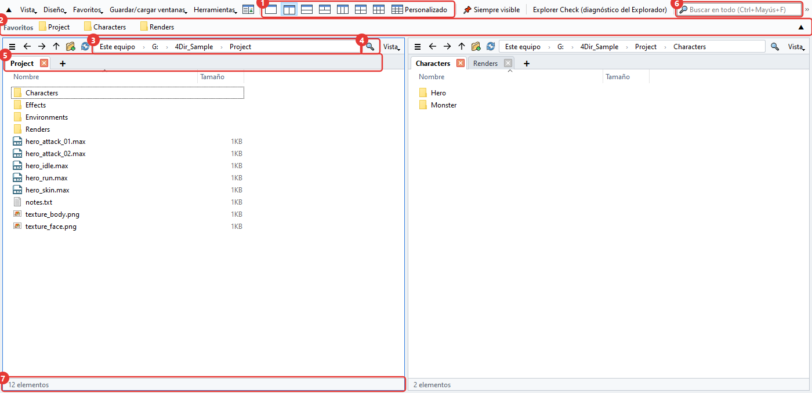
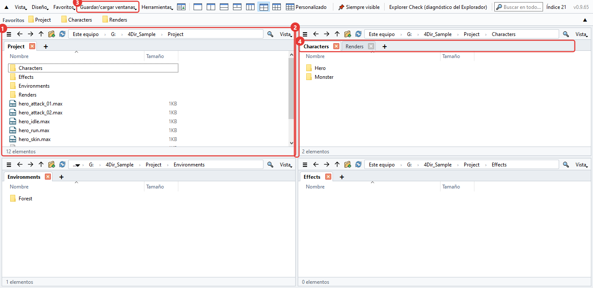
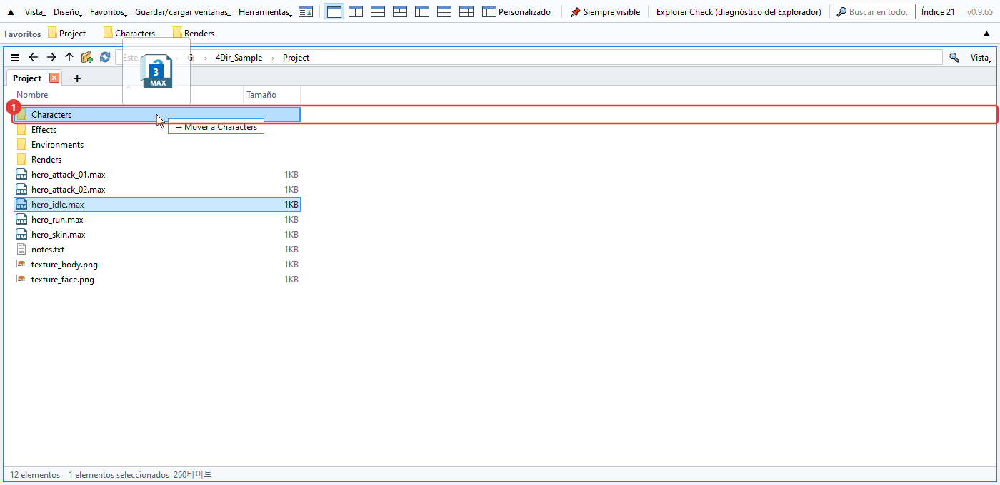
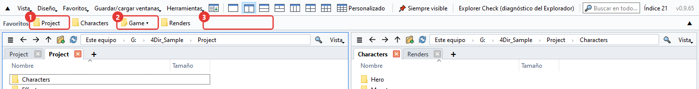
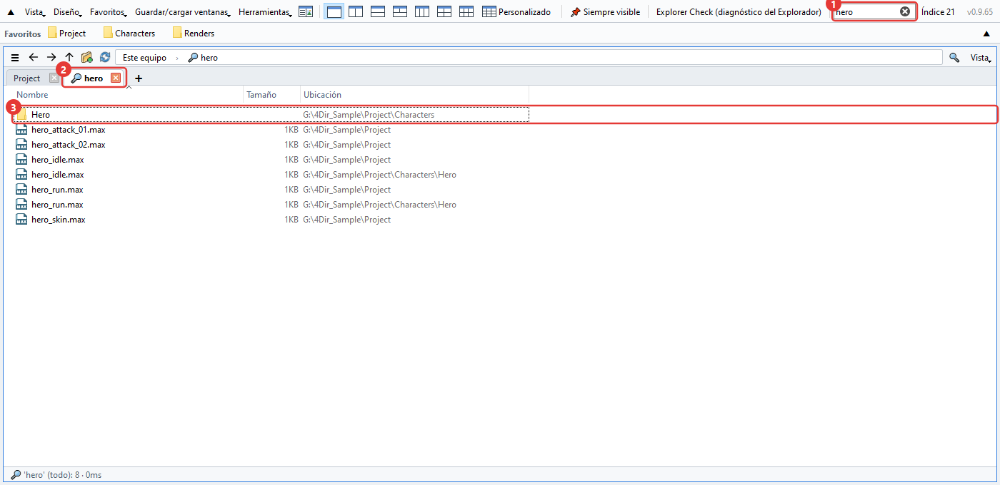
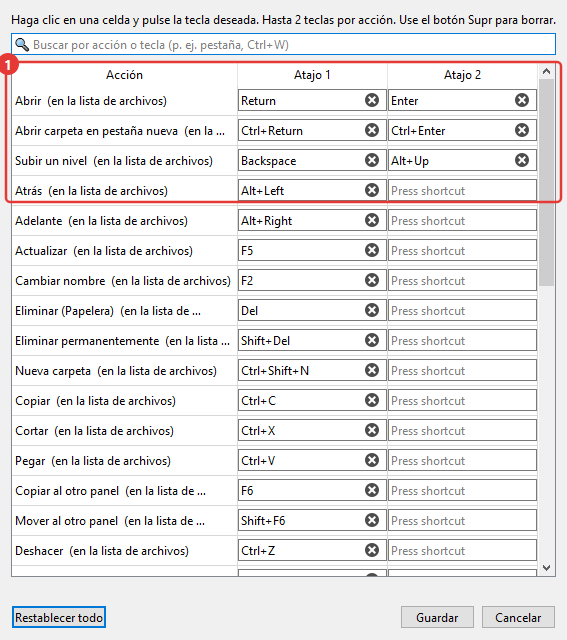
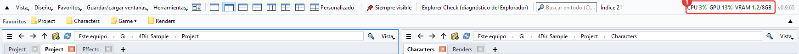
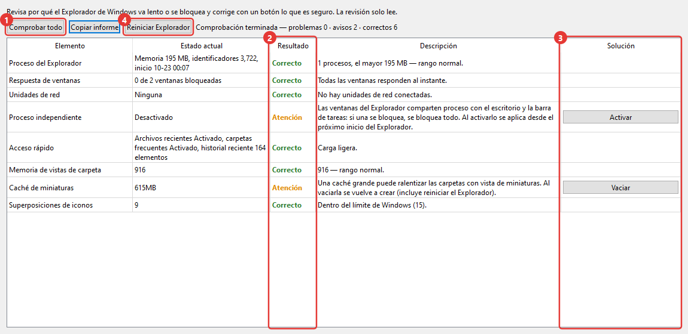

Cómo usar 4Dir
Aquí va lo que más se usa, más o menos en el orden en que lo vas a necesitar. Los números rojos de las imágenes coinciden con los del texto. Los atajos son casi los mismos que en el Explorador de Windows, así que si ya lo usabas, la mitad ya te la sabes.
La ventana principal
4Dir sirve para tener varias carpetas abiertas una al lado de otra en una sola ventana. De arriba abajo:

- Botones de diseño. 1, 2, 3, 4 y 6 paneles con un clic. El último, Personalizado, te deja elegir cuántas columnas y filas quieres (hasta 5×4).
- Barra de favoritos. Arrastra aquí una carpeta que uses a menudo y se convierte en un botón. Con clic derecho en el botón puedes cambiarle el nombre o quitarlo.
- Barra de direcciones. Haz clic en cualquier parte de la ruta para ir a esa carpeta. Si haces clic en el hueco de la derecha, puedes escribir la ruta.
- Filtro. Filtra por nombre dentro de la carpeta actual. Ctrl+F
- Pestañas. Cada panel tiene las suyas. Se abren con + o Ctrl+T y se cierran con Ctrl+W.
- Buscar en todo. Busca archivos por nombre en unidades enteras. Lo explico más abajo, en 'Buscar'.
- Barra de estado. Muestra cuántos elementos hay y cuántos has seleccionado, con su tamaño.
Paneles y pestañas
Cada panel es como un pequeño Explorador. Cada uno recuerda sus propias pestañas y carpetas.

- El último panel en el que hiciste clic tiene un borde azul. Los atajos actúan sobre ese panel.
- Arrastra el borde entre paneles para cambiar su tamaño.
- En Guardar/cargar ventanas puedes guardar los paneles y pestañas actuales con un nombre. Tener uno por proyecto es muy práctico.
- Las pestañas se pueden arrastrar para cambiar el orden o pasarlas a otro panel; si las sueltas fuera de la ventana, se abren en una ventana nueva. Con clic derecho también puedes abrirlas en el Explorador de Windows.
Si cierras 4Dir y lo vuelves a abrir, tienes otra vez los paneles y pestañas de la última vez. Si reinicias el PC con 4Dir abierto, se vuelve a abrir al iniciar sesión (se puede desactivar en el menú Herramientas).
Mover y copiar archivos
Igual que en el Explorador. Al arrastrar, la carpeta de destino se resalta y al lado aparece algo como '→ Mover a …', para que sepas qué va a pasar.

- Carpeta de destino. En la misma unidad se mueve; en otra unidad se copia. Si sueltas con Ctrl pulsado se copia, con Shift se mueve.
Con varios paneles no hace falta arrastrar. Selecciona y pulsa F6 para copiar al otro panel, o Shift+F6 para mover.
¿Te has equivocado? Ctrl+Z. Deshace uno a uno cambios de nombre, carpetas nuevas, movimientos, copias y envíos a la papelera.
Mientras cambias un nombre con F2, pulsa ↓ y pasas directamente al siguiente archivo. Si seleccionas varios archivos y pulsas F2, se abre la ventana Cambiar nombre en lote.
El menú del clic derecho es el de Windows tal cual. Los menús del compresor o de TortoiseSVN aparecen igual que en el Explorador.
Clic derecho en una imagen .webp → Convertir WebP → Guardar como PNG / Guardar como JPG. Aparece un archivo nuevo en la misma carpeta y el original se queda (bórralo tú si no lo necesitas). También funciona con varios archivos a la vez.
Favoritos
Pon las carpetas que más usas como botones en la barra de arriba. Al principio está vacía y solo muestra lo que añades tú (no tiene nada que ver con el Acceso rápido del Explorador de Windows).

- Botón de favorito. Al hacer clic se abre esa carpeta en el panel actual. Con clic derecho tienes Abrir en pestaña nueva, Cambiar nombre y Eliminar. Si arrastras archivos encima del botón, se mueven o se copian a esa carpeta.
- Botón de grupo (▾). Junta varios favoritos en un solo botón. Al hacer clic se despliega la lista. Si sueltas una carpeta en el centro de un botón de grupo, entra en ese grupo.
- Si sueltas una carpeta en un hueco o entre dos botones, aparece un botón nuevo justo ahí. También puedes arrastrar los botones para cambiar el orden. La carpeta actual se añade con Ctrl+D.
Si hay mucho que ordenar, abre Favoritos → Organizar favoritos. Ahí puedes borrar varios a la vez, cambiar el orden y los nombres, crear grupos y encontrar carpetas que ya no existen, todo en una ventana. Los cambios no se aplican hasta que pulsas Confirmar.
Si los botones no caben en una línea, haz clic en ▼ al final de la barra. Se abre en varias líneas y los ves todos (▲ la deja otra vez en una).
Para usar las carpetas que tienes ancladas en el Explorador de Windows, ve a Favoritos → Importar Acceso rápido del Explorador de Windows. Las que ya están se saltan.
Buscar
Escribe en el cuadro de búsqueda de arriba y empieza a buscar al momento. La primera vez que arranca, 4Dir crea una lista con los nombres de archivo de las unidades, y después solo sigue los cambios, por eso es rápido.

- Cuadro de búsqueda. Con varias palabras salen solo los nombres que las tienen todas. También funcionan comodines como
*.max. Ctrl+Shift+F - Los resultados se abren en una pestaña con una lupa.
- La columna 'Ubicación' es la carpeta donde está el archivo. Doble clic para abrirlo, o clic derecho → Abrir ubicación del archivo para ir a esa carpeta.
Qué unidades se buscan se elige en Herramientas → Ámbito de búsqueda. Las unidades de red vienen desactivadas.
Si la lista aún no está lista o la carpeta queda fuera del ámbito, el botón de flecha junto al filtro busca en todo lo que hay debajo de la carpeta actual.
Si usas SVN
Si tu carpeta de trabajo está en SVN, los archivos y carpetas llevan una marca de estado. Si tienes TortoiseSVN instalado, se usan los mismos iconos que en el Explorador.

- Marca verde: sin cambios. En las carpetas se mira todo lo que hay dentro.
- Exclamación roja: modificado. En una carpeta, significa que dentro hay cambios sin confirmar.
- Más azul: pendiente de añadir (aún sin confirmar).
- Interrogación gris: archivo fuera del control de versiones.
Los botones de la barra de favoritos llevan las mismas marcas, así que desde arriba ves enseguida qué carpetas tienen cambios sin confirmar.
Las copias de trabajo grandes tardan unos segundos la primera vez. Mientras tanto, la barra de estado dice 'Comprobando SVN'. Si no necesitas las marcas, desactiva Vista → Mostrar → Mostrar estado de SVN.
Cambiar los atajos
En Herramientas → Atajos de teclado eliges la tecla que quieras para cada función. Cada función admite hasta dos teclas.

- Haz clic en la casilla y pulsa la tecla que quieras; se cambia al momento. Si la tecla ya está en uso, te avisa.
Los más útiles: Ctrl+T pestaña nueva, Ctrl+W cerrar pestaña, Ctrl+N ventana nueva, Ctrl+L barra de direcciones, Ctrl+Shift+C copiar ruta, Alt+Enter propiedades.
Ver el uso de CPU y GPU
Está pensado para ver lo ocupado que está el PC mientras renderizas en 3ds Max o juegas. Los números salen a la derecha de la barra de arriba.

- CPU: uso de todo el PC. GPU: uso de la tarjeta gráfica. VRAM: memoria de la tarjeta gráfica usada/total (GB). Pasan a naranja por encima del 60% y a rojo por encima del 85%. Se actualizan cada 1,5 segundos y, si pasas el ratón por encima, ves el nombre de la tarjeta gráfica.
GPU y VRAM solo salen con tarjetas NVIDIA. Con otras tarjetas solo verás la CPU.
No se muestra el uso de la memoria del sistema (RAM). Si lo necesitas, mira el Administrador de tareas (Ctrl+Shift+Esc).
Para quitarlo: Vista → Mostrar uso de CPU·GPU. Al minimizar la ventana se deja de actualizar solo. Si la ventana es estrecha, pasa dentro de » al final de la barra de menús.
Explorer Check (diagnóstico del Explorador)
Es una herramienta para cuando el Explorador de Windows se queda colgado o va lento a menudo. Se abre desde Explorer Check (diagnóstico del Explorador) en la barra de arriba o desde el menú Herramientas. Empieza a comprobar en cuanto se abre, y la comprobación solo lee, no cambia nada.

- Comprobar todo: vuelve a comprobar. Revisa la memoria del Explorador, la respuesta de las ventanas, las unidades de red, el proceso aparte para las ventanas de carpetas, los elementos recientes, la vista guardada de las carpetas, la caché de miniaturas, el número de iconos superpuestos, los cierres forzados recientes y más.
- Resultado: Correcto / Atención / Problema / Info. En la columna de al lado pone el motivo.
- Botón de solución. Solo aparece en lo que se puede arreglar. Al pulsarlo te vuelve a preguntar y te dice qué va a cambiar, y solo toca la configuración y las carpetas del usuario actual.
- Reiniciar Explorador: cierra el Explorador y lo vuelve a abrir cuando se ha quedado colgado. Las ventanas del Explorador que tengas abiertas se cerrarán.
Con Copiar informe copias el resultado como texto. Si nos consultas un problema, mándalo junto con la consulta y encontraremos la causa antes.
Otras cosas
- El modo claro/oscuro y el idioma están en el menú Vista. El idioma cambia al volver a abrir 4Dir.
- Si 4Dir hace cosas raras, pulsa Herramientas → Guardar registro para informe de problemas y envía el zip que se crea a support@4dir.net. Con el registro buscamos la causa.